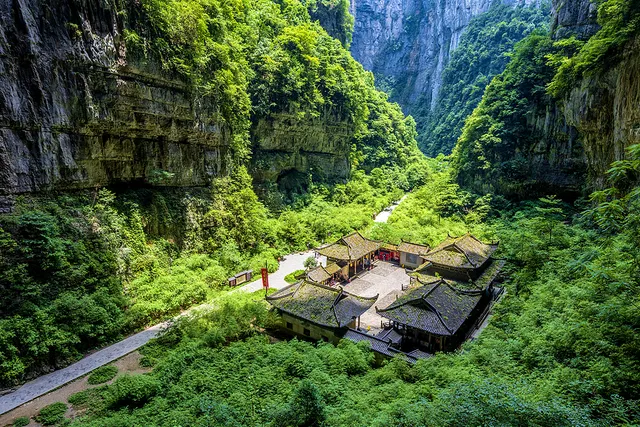

Geography and Climate
Chongqing has a mountainous landscape with river valleys and densely built urban districts. Summers are typically hot and humid, while winters are relatively mild but often damp.
THE MOUNTAIN CITY
Chongqing is a major municipality in southwestern China, located where the Yangtze and Jialing rivers meet. It is known for its steep terrain, layered roads, dramatic skyline, flavorful cuisine, and rich cultural traditions.

Chongqing has a mountainous landscape with river valleys and densely built urban districts. Summers are typically hot and humid, while winters are relatively mild but often damp.

Modern transport, shopping districts, public spaces, and striking architecture exist alongside traditional neighborhoods and historic sites.
Explore famous urban viewpoints, enjoy authentic Sichuan-style flavors, discover historic streets, cruise along the Yangtze River, and experience a city whose unusual topography shapes everyday life.